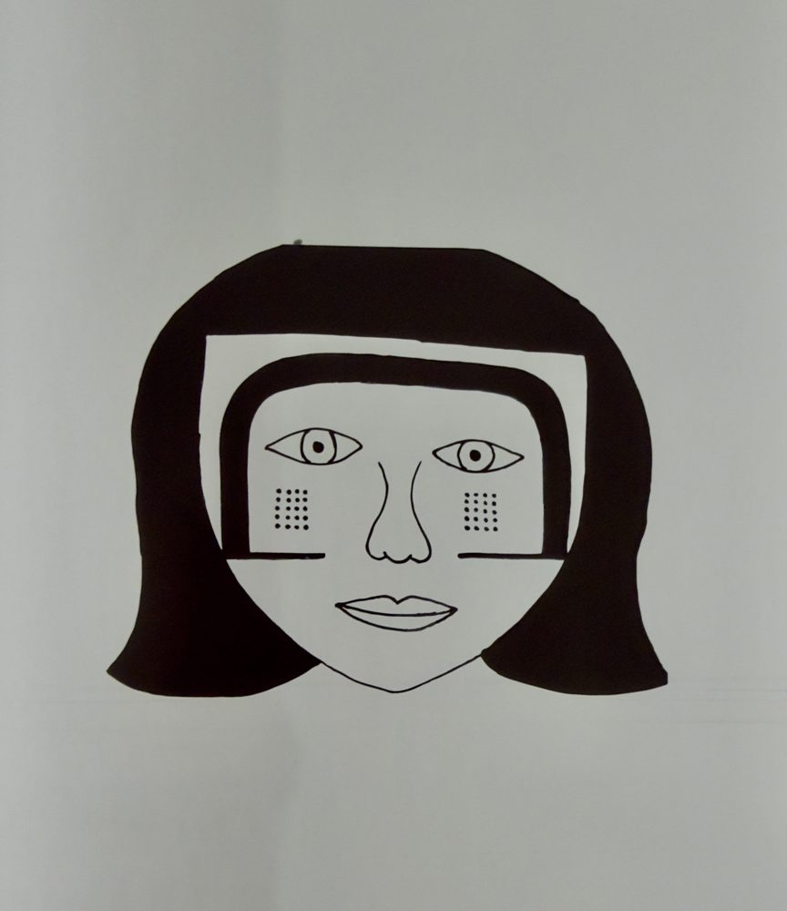
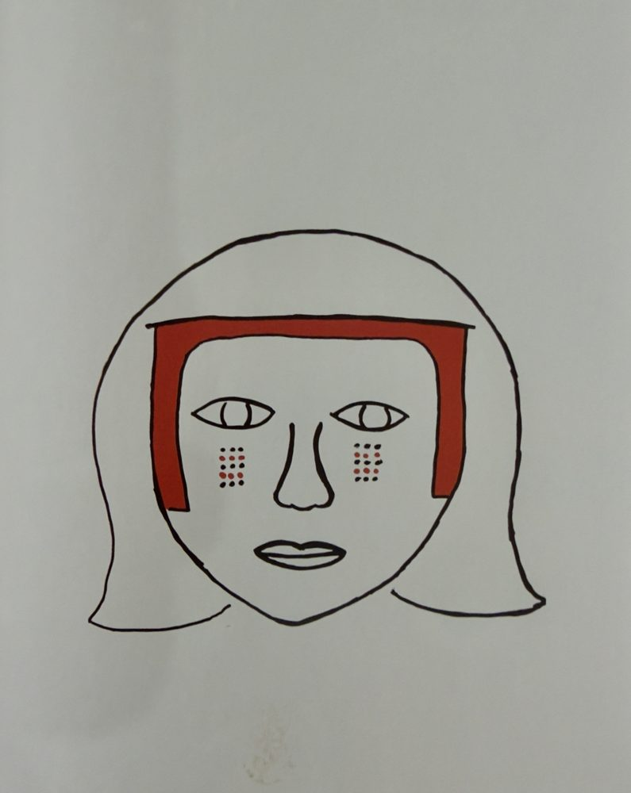

Encyclopedia
Pinturas faciais: Apiborege
Pinturas faciais (boe ejiwu) do clã Apiborege, metade Tugarege: 4 registros.
Pinturas faciais do clã Apiborege, metade Tugarege. Descrições marcadas como pendentes foram omitidas; os dados aguardam validação pela comunidade.
- Bakure O — Representa o rabo do macaco (espécie não identificada).
- Tubore Edugo — Representa as pintas do lambari.
- Tubore Edugo 2 — Representa as pintas do lambari.
- Tubore Atugo 3 — Representa as pintas do lambari.
Pictures
 Tubore Edugo. Photo: Boe Ejerare (LanguageStructure/boe-ejerare)
Tubore Edugo. Photo: Boe Ejerare (LanguageStructure/boe-ejerare)
Tubore Edugo 2. Photo: Boe Ejerare (LanguageStructure/boe-ejerare)
Tubore Atugo 3. Photo: Boe Ejerare (LanguageStructure/boe-ejerare)
How to cite
Pinturas faciais: Apiborege. In: Boe Eno Moto, Encyclopedia (2026-10-09). https://boeenomoto.terradoc.org/en/encyclopedia/pinturas-apiborege.html
Updated 2026-10-09